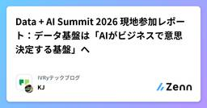

IVRyテックブログのフィード
https://zenn.dev/p/ivry
対話AIプラットフォーム「アイブリー」を開発しているエンジニアのテックブログまとめです。
フィード

Data + AI Summit 2026 現地参加レポート：データ基盤は「AIがビジネスで意思決定する基盤」へ 1
1
IVRyテックブログのフィード
こんにちは、IVRyでデータエンジニアとして働いている松田健司（@ken_3ba）です。趣味はビリヤードで、プロの試合にも出ているぐらい割とガチでやっています。今回はData + AI Summit（以下Summit）に参加してきたので、現地の様子と注目した発表をまとめます。その前に、いつものビリヤードの話を。Data + AI Summitにはいくつかクエストがあって、達成するとビリヤードボールっぽいものがもらえます。ビリヤードプレイヤーとしての使命感で集めてきました。https://x.com/Data_AI_Summit/status/1933245536389198198...
2日前

対話システムの評価を LLM にどこまで任せられるか（前編）：5 つの落とし穴
IVRyテックブログのフィード
TL;DR対話システムを「エンドユーザーが使えるか」の観点で受け入れテストするとき、シナリオ生成も評価も LLM に任せたくなります。しかし、LLM によるシミュレーション／評価には、生成発話のクオリティ、LLM as a Judge の限界、LLMベースシミュレーターの持つ譲歩問題など大きく5つの落とし穴が存在します。合成データによる自動評価は本物のエンドユーザーの代理にすぎないため、LLM を使った評価はあくまで対話システムリリースのための「必要条件」でしかならないことに注意が必要です。本記事は前後編の構成となっており、前編となる本記事では LLM によるシミュレー...
17日前
Databricks AppsのUser authorization（U2M）を試す —— ユーザーごとにカタログを出し分ける
IVRyテックブログのフィード
はじめにこんにちは、IVRy でデータエンジニアとして働いている松田 健司(@ken_3ba)と申します。趣味はビリヤードで、プロの試合にも出ていたりするぐらい割とガチでやっています。余談ですが、最近のビリヤード漫画だと岡Q先生の『ミドリノバショ』（小学館）が面白かったです。作中には手前の球を飛び越える ジャンプショット も出てきます。漫画では足で固定してジャンプショットをしていますが（たぶん反則な気がする）、足で固定しない普通のジャンプショット自体は実際にあり、自分もよく使います。岡Q『ミドリノバショ』（小学館）よりビリヤードの話はこの辺にして、本記事は Databric...
1ヶ月前
ゼロからデータ基盤構築をした時の失敗談：すべては要件定義できまる
IVRyテックブログのフィード
こんにちは、IVRyでデータエンジニアとして働いている松田健司（@ken_3ba）です。趣味はビリヤードで、プロの試合にも出るぐらい割とガチでやっています。ビリヤードが盛んな国はどこかご存知でしょうか。アメリカやヨーロッパが盛んなイメージかと思いますが、実はフィリピンや台湾といったアジアでも人気で、世界ランキング上位に複数います。日本にも世界で戦うスタープレイヤーの大井直幸プロがいて、応援しています！画像出典: SE11トーナメント | ビリヤードキューズビリヤードの話はこのへんにして、本題に入ります。 TL;DRゼロからデータ基盤を作って踏んだ3つの失敗談（スナップショ...
2ヶ月前
IVRyから3名がDatabricks JEDAI Order 2026を受賞！IVRyのDatabricks関連記事も一挙紹介
IVRyテックブログのフィード
こんにちは、IVRyでデータエンジニアとして働いている松田健司（@ken_3ba）です。趣味はビリヤードで、プロの試合にも出ているぐらい割とガチでやっています。今日のビリヤード情報は、billiards_TV というYouTubeチャンネルがオススメです。まさかビリヤードにもゆっくり解説があるとは（笑）。初心者にもわかりやすい内容なのでぜひチェックしてみてください。さて、本日のビリヤードの話はこのへんで切り上げて本題に入ります！ はじめにこの度、Databricks Japan User Groupが主催する JEDAI Order 2026 にて、IVRyから3名が表彰されま...
3ヶ月前
Databricks Lakehouse Federationで運用負荷ゼロのデータ連携
IVRyテックブログのフィード
こんにちは、IVRyでデータエンジニアとして働いている松田健司（@ken_3ba)です。趣味はビリヤードで、プロの試合にも出ているぐらい割とガチでやっています。先日、年に一度のアマチュア最大の大会「全日本アマチュアナインボール選手権大会」の東京予選に出場しました。101人中わずか6人しか本選に進めない狭き門で、9ボールの7先（先に7ラック取った方が勝ち）で戦います。2回戦まで進んだのですが、6-6のヒルヒル（お互いあと1ラックで勝ち）から最後にミスして敗退しました。悔しい...全日本アマチュアナインボール選手権大会の本選特設会場。いつかここで撞きたい。さて、本日のビリヤードの話は...
3ヶ月前
Databricks system tableのリネージ情報で"本当に使われているテーブル"を見つける
IVRyテックブログのフィード
はじめにこんにちは！IVRyのdataグループでインターンをしているTsukasaです！インターン最初の1ヶ月で、社内データをよりAIフレンドリーな環境にするために、OBT（One Big Table）の作成を目的としたDatabricksのメタデータ分析に取り組みました。本記事では、この取り組みで得たsystem tableの活用方法についての知見を紹介します。以下のような方に読んでいただくことを想定しています。Databricksで管理している自社データの利用分析を行いたい方インターン生の取り組みについて知りたい方IVRyに興味のある方なにぶん初めての記事で...
4ヶ月前
DatabricksでSupervisor Agentを構築してみた
IVRyテックブログのフィード
こんにちは、IVRyでデータエンジニアとして働いている松田健司（@ken_3ba)です。趣味はビリヤードで、プロの試合にも出ているぐらい割とガチでやっています。今年に入って、ビリヤードの世界大会で日本人の女性と男性がそれぞれ優勝しました！ビリヤードはマイナースポーツなのでご存知ない方も多いかもしれませんが、これは本当にすごいことでとても感動しました！そして、優勝するとビリヤード台の上でパフォーマンスをするという慣例があるのですが、その優勝した日本人プロの方は靴を脱いで台に上がり、日本人らしさを感じました笑さて、本日のビリヤードの話はこのへんで切り上げて本題に入ります！ はじめ...
4ヶ月前
Slackの投稿をDatabricks AppsとAIに投げ、四半期の振り返りを爆速化する
IVRyテックブログのフィード
IVRyでBEエンジニアをしている @eityans です。IVRyでは定期的に一日の社内ハッカソンが行われております。第3回のテーマは「Databricksによる社内データ活用」でした。この記事では自分が作った、「Slackの投稿をAIに投げ、自分が四半期で何をしていたのかを振り返る」仕組みを紹介します 背景IVRyでは四半期ごとに評価のための自己振り返りを実施します。日々夢中になって仕事をしているため、いざ振り返ろうとすると「前の四半期自分は何をしていたっけ...?」となることがしょっちゅうあります。そこで、Databricks Appsと社内データを活用して、爆速で振り返...
6ヶ月前
Claude Codeを使った開発におけるトークン節約術
IVRyテックブログのフィード
本記事は、IVRy Advent Calendar 2025「IVRy AIブログリレー Part2」23日目の記事です。昨日は清水文明（@Fumiaki_Shimizu）が「コールセンターにおけるAI活用」を書きました。こちらもぜひご覧ください！https://adventar.org/calendars/11552 はじめにIVRyでモバイルエンジニアとして働いているAmemiyaです。最近、バックエンド含め複数のリポジトリを統合したモノレポ環境での開発が増えたことで、ある課題に直面しました。「コンテキスト（トークン）の消費が激しすぎる」Claude CodeなどのAI...
6ヶ月前
Databricksコスト最適化の実践ガイド —— データ取り込みのジョブコストを半分以上削減した
IVRyテックブログのフィード
はじめに本記事は、Databricks Advent Calendar 2025 16日目の記事です。https://qiita.com/advent-calendar/2025/databricksこんにちは、IVRy でデータエンジニアとして働いている松田 健司(@ken_3ba)と申します。趣味はビリヤードで、プロの試合にも出ているぐらい割とガチでやっています。最近ビリヤードのキューを買いました！見てくださいこの派手さ！一目惚れして、なんと40万円も奮発してしまいました！ビリヤードの話は無限にできるのでここらへんで切り上げて、本題のDatabricksのコスト最適化に...
7ヶ月前
Delta Sharingで実現するセキュアな企業間データ連携 —— 導入から検証までの実践ガイド
IVRyテックブログのフィード
はじめに本記事は、Databricks Advent Calendar 2025 10日目の記事です。https://qiita.com/advent-calendar/2025/databricksこんにちは、IVRy でデータエンジニアとして働いている松田 健司(@ken_3ba)と申します。趣味はビリヤードでプロの試合にも出ていたりするぐらい割とガチでやっています。先日も尼崎でプロの一番大きな大会に出場しました！1勝もできませんでしたが笑本記事はビリヤードの記事とは全く関係なく、Databricksを活用した企業間データ連携についてお話ししますのでご安心ください！今...
7ヶ月前
【AWS re:invent 2025】 AmazonのチームはAIアシスタントをどう活用して開発を加速しているのか
IVRyテックブログのフィード
!本記事は IVRy Advent Calendar 2025「IVRy AI ブログリレー Part2」 の 12 月 9 日の記事です。昨日は ナカヨシさんが「記事の品質チェック、まだ人間がやってるの？ AI に「顧客人格」を憑依させて辛口レビューしてもらう方法」を書きました。こちらもぜひご覧ください！Adventar IVRy AI ブログリレー Part2 Advent Calendar 2025 - AdventarAdventar みんなが知らない IVRy！ Advent Calendar 2025 - Adventarこんにちは。SRE の @komtak...
7ヶ月前
Zustand vanilla store を使って通話ロジックを React から分離した話
IVRyテックブログのフィード
!この記事は みんなが知らないIVRy！ Advent Calendar 2025 の8日目の記事になります。昨日は堀田さんの「IVRy、エンジニア入りまくってるイメージ。実際いまどんな感じ？」2025年末編でした。明日は富士さんの記事が公開予定です。株式会社IVRy（アイブリー）のエンジニアの kinashi です。React の状態管理むずかしいですよね。複雑な状態遷移や外部 SDK を扱う場合、責務分離や、テストに悩んだことがある方も少なくないかと思います。アイブリーでは電話という少し特殊なドメインを扱っています。Twilio を使ったブラウザ通話処理を @twilio/...
7ヶ月前
LLMのプロダクト利用とAI破産を回避する運用体制
IVRyテックブログのフィード
こんにちは、IVRy でデータエンジニアとして働いている松田 健司(@ken_3ba)と申します。今まで「マツケン」というあだ名しかつかなかったのですが、社内では長いからという理由でKJと呼ばれるようになりました。本記事は、IVRy Advent Calender「IVRy AIブログリレー Part2」6日目の記事です。https://adventar.org/calendars/115522025年7月1日入社でまだ半年経っていませんが、前職からDatabricksをずっと触っており、IVRyでもDatabricksを利用したデータ基盤構築や利活用をしています。この記事では、...
7ヶ月前
IVRy のモバイルアプリの通話自動テストへの取り組み
IVRyテックブログのフィード
IVRy で QA エンジニアをしている関 ( @IvryQa )です。IVRyでは、モバイルアプリ（iOS / Android）を提供しており、それらのQAや自動化も担当しています。モバイルアプリでは、発着信や不在通知の確認、ウィジェットからの電話履歴確認など、日々の業務で使われる機能が搭載されています。電話機能ウィジェット機能このモバイルアプリの QA を進める上で、OS や端末によるバリエーションの多さに加え、発着信のように実際に電話をかけて挙動を確認するケースも多く、手動テストの負担が大きくなってきています。そこで、テストにかかる工数を改善するため、モバイルエンジ...
7ヶ月前
モバイルアプリのログを Agentic Coding で SQL を書かせてダッシュボードを作る
IVRyテックブログのフィード
こんにちは、株式会社IVRy のボルドーです。本記事では弊社のモバイルアプリ「アイブリー」で取得している Firebase の Analytics および Crashlytics のログを Claude Code に分析、SQL を書かせてデータ基盤上にモニタリングダッシュボードを作成したので紹介したいと思います。!本記事は、IVRy Advent Calender「AIブログリレー Part2」2日目の記事です。昨日は moriya_gekko さんの『もしAI素人が「明日からAIエージェント作ってくれ」と言われたら』でした。https://adventar.org/cal...
7ヶ月前
Figma MCP を使って Production Ready な Flutter コードを生成する
IVRyテックブログのフィード
こんにちは。@shanonim です。デザインからコードを自動生成する技術は、太古の昔から試行錯誤が繰り返されてきた夢の技術ですが、生成AIとMCP (Model Context Protocol) の登場によって大きく進化しています。特に Figma が公開している Dev Mode MCPサーバー (以下、Figma MCP) は、Claude などのAIアシスタントと連携することで、高品質なコードを生成できる画期的なツールとして注目されています。Figma MCP公開当初は「意図した Widget 構造にならない」「命名が分かりにくい」といった課題があり、なかなか開発現場に浸...
8ヶ月前
Flutter Headless EngineによるバックグラウンドVoIPプッシュ通知処理
IVRyテックブログのフィード
Flutter Headless EngineによるバックグラウンドVoIPプッシュ通知処理 はじめに株式会社IVRyでソフトウェアエンジニアをしているamemiyaです。私たちは「アイブリー」というFlutter製のVoIP通話アプリを開発しています。VoIP（Voice over Internet Protocol）は、従来の電話回線ではなくインターネット回線を使って音声データを送受信する技術です。VoIP通話機能の実装にはTwilioを使用していますが、Twilio公式のFlutter SDKは存在しないため、Android SDKとiOS SDKをラップしたFlutt...
8ヶ月前
Flutterアプリ開発のツール管理をFVMからmiseに移行する
IVRyテックブログのフィード
こんにちは、IVRyのitochanです。IVRyのアプリ開発チームでは、Flutterアプリ開発に使うツールの管理をFVMからmiseに移行しました。本記事ではmiseをFlutterアプリ開発で使う利便性をご紹介します。 なぜFVMからmiseに移行するのかFlutterのバージョン管理といえばFVMがよく使われています。Flutterのバージョン管理に特化しているため、簡単なコマンド操作でFlutter SDKのダウンロード・バージョン固定が可能です。# Flutter 3.35.7を利用する$ fvm use 3.35.7# または、Stableの最新バージョンを利...
8ヶ月前